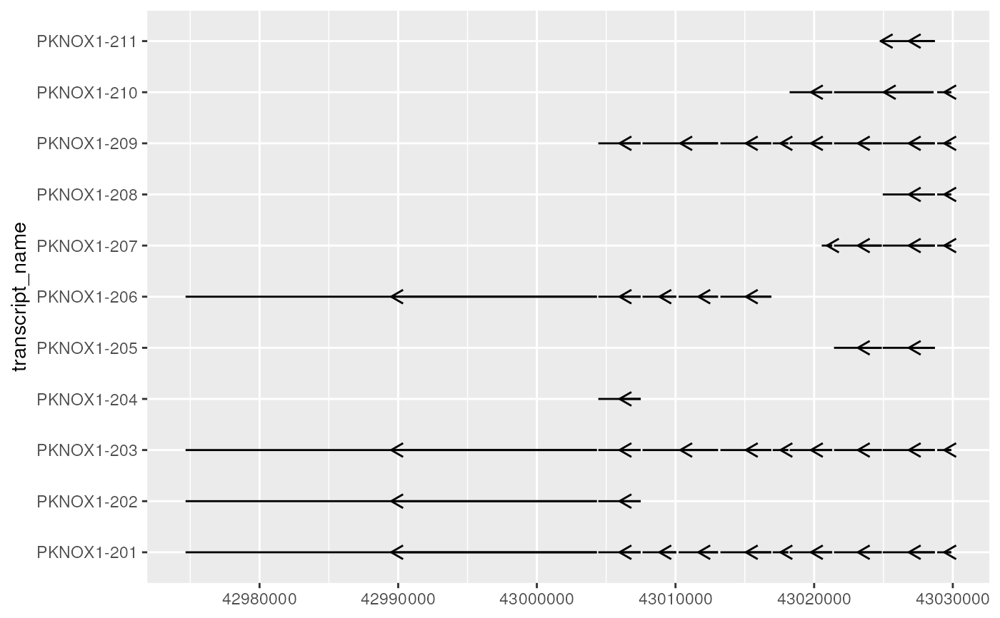
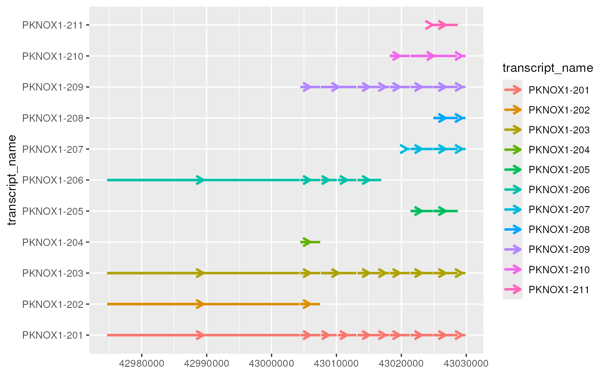
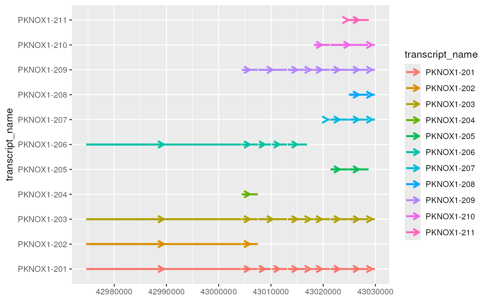

geom_intron() draws horizontal lines with central arrows that are designed
to represent introns. In combination with geom_range()/geom_half_range(),
these geoms form the core components for visualizing transcript
annotation.
Usage
geom_intron(
mapping = NULL,
data = NULL,
stat = "identity",
position = "identity",
...,
arrow = grid::arrow(ends = "last", length = grid::unit(0.1, "inches")),
arrow.fill = NULL,
lineend = "butt",
linejoin = "round",
na.rm = FALSE,
arrow.min.intron.length = 0,
show.legend = NA,
inherit.aes = TRUE
)Arguments
- mapping
Set of aesthetic mappings created by
aes()oraes_(). If specified andinherit.aes = TRUE(the default), it is combined with the default mapping at the top level of the plot. You must supplymappingif there is no plot mapping.- data
The data to be displayed in this layer. There are three options:
If
NULL, the default, the data is inherited from the plot data as specified in the call toggplot().A
data.frame, or other object, will override the plot data. All objects will be fortified to produce a data frame. Seefortify()for which variables will be created.A
functionwill be called with a single argument, the plot data. The return value must be adata.frame, and will be used as the layer data. Afunctioncan be created from aformula(e.g.~ head(.x, 10)).- stat
The statistical transformation to use on the data for this layer, as a string.
- position
Position adjustment, either as a string, or the result of a call to a position adjustment function.
- ...
Other arguments passed on to
layer(). These are often aesthetics, used to set an aesthetic to a fixed value, likecolour = "red"orsize = 3. They may also be parameters to the paired geom/stat.- arrow
specification for arrow heads, as created by arrow().
- arrow.fill
fill colour to use for the arrow head (if closed).
NULLmeans usecolouraesthetic.- lineend
Line end style (round, butt, square).
- linejoin
Line join style (round, mitre, bevel).
- na.rm
If
FALSE, the default, missing values are removed with a warning. IfTRUE, missing values are silently removed.- arrow.min.intron.length
integer()the minimum required width of an intron for a strand arrow to be drawn. This can be useful to remove strand arrows on short introns that overlap adjacent exons.- show.legend
logical. Should this layer be included in the legends?
NA, the default, includes if any aesthetics are mapped.FALSEnever includes, andTRUEalways includes. It can also be a named logical vector to finely select the aesthetics to display.- inherit.aes
If
FALSE, overrides the default aesthetics, rather than combining with them. This is most useful for helper functions that define both data and aesthetics and shouldn't inherit behaviour from the default plot specification, e.g.borders().
Details
geom_intron() requires the following aes(); xstart, xend and y
(e.g. transcript name). The strand option (one of "+" or "-") adjusts the
arrow direction to match the direction of transcription. the
arrow.min.intron.length parameter can be useful to remove strand arrows
overlapping exons, which can be a problem if plotted introns include those
that are relatively short.
Examples
library(magrittr)
library(ggplot2)
# to illustrate the package's functionality
# ggtranscript includes example transcript annotation
pknox1_annotation
#> # A tibble: 112 × 8
#> seqnames start end strand type gene_name transcript_name
#> <fct> <int> <int> <fct> <fct> <chr> <chr>
#> 1 21 42974510 43033931 + gene PKNOX1 NA
#> 2 21 42974510 43033931 + transcript PKNOX1 PKNOX1-203
#> 3 21 42974510 42974664 + exon PKNOX1 PKNOX1-203
#> 4 21 43004326 43004432 + exon PKNOX1 PKNOX1-203
#> 5 21 43007491 43007618 + exon PKNOX1 PKNOX1-203
#> 6 21 43013068 43013238 + exon PKNOX1 PKNOX1-203
#> 7 21 43013068 43013238 + CDS PKNOX1 PKNOX1-203
#> 8 21 43013068 43013070 + start_codon PKNOX1 PKNOX1-203
#> 9 21 43016908 43017007 + exon PKNOX1 PKNOX1-203
#> 10 21 43016908 43017007 + CDS PKNOX1 PKNOX1-203
#> # … with 102 more rows, and 1 more variable: transcript_biotype <chr>
# extract exons
pknox1_exons <- pknox1_annotation %>% dplyr::filter(type == "exon")
pknox1_exons
#> # A tibble: 59 × 8
#> seqnames start end strand type gene_name transcript_name
#> <fct> <int> <int> <fct> <fct> <chr> <chr>
#> 1 21 42974510 42974664 + exon PKNOX1 PKNOX1-203
#> 2 21 43004326 43004432 + exon PKNOX1 PKNOX1-203
#> 3 21 43007491 43007618 + exon PKNOX1 PKNOX1-203
#> 4 21 43013068 43013238 + exon PKNOX1 PKNOX1-203
#> 5 21 43016908 43017007 + exon PKNOX1 PKNOX1-203
#> 6 21 43018133 43018230 + exon PKNOX1 PKNOX1-203
#> 7 21 43021303 43021431 + exon PKNOX1 PKNOX1-203
#> 8 21 43024871 43024947 + exon PKNOX1 PKNOX1-203
#> 9 21 43028702 43028874 + exon PKNOX1 PKNOX1-203
#> 10 21 43029890 43033931 + exon PKNOX1 PKNOX1-203
#> # … with 49 more rows, and 1 more variable: transcript_biotype <chr>
# to_intron() is a helper function included in ggtranscript
# which is useful for converting exon co-ordinates to introns
pknox1_introns <- pknox1_exons %>% to_intron(group_var = "transcript_name")
pknox1_introns
#> # A tibble: 48 × 8
#> seqnames strand type gene_name transcript_name transcript_biotype start
#> <fct> <fct> <chr> <chr> <chr> <chr> <int>
#> 1 21 + intron PKNOX1 PKNOX1-203 protein_coding 4.30e7
#> 2 21 + intron PKNOX1 PKNOX1-202 retained_intron 4.30e7
#> 3 21 + intron PKNOX1 PKNOX1-201 protein_coding 4.30e7
#> 4 21 + intron PKNOX1 PKNOX1-206 retained_intron 4.30e7
#> 5 21 + intron PKNOX1 PKNOX1-204 retained_intron 4.30e7
#> 6 21 + intron PKNOX1 PKNOX1-203 protein_coding 4.30e7
#> 7 21 + intron PKNOX1 PKNOX1-201 protein_coding 4.30e7
#> 8 21 + intron PKNOX1 PKNOX1-206 retained_intron 4.30e7
#> 9 21 + intron PKNOX1 PKNOX1-209 nonsense_mediated_de… 4.30e7
#> 10 21 + intron PKNOX1 PKNOX1-202 retained_intron 4.30e7
#> # … with 38 more rows, and 1 more variable: end <int>
base <- pknox1_introns %>%
ggplot(aes(
xstart = start,
xend = end,
y = transcript_name
))
# by default, geom_intron() assumes introns originate from the "+" strand
base + geom_intron()
# however this can be modified using the strand option
base + geom_intron(strand = "-")

# strand can also be set as an aes()
base + geom_intron(aes(strand = strand))
 # as a ggplot2 extension, ggtranscript geoms inherit the
# the functionality from the parameters and aesthetics in ggplot2
base + geom_intron(
aes(colour = transcript_name),
size = 1
)

# together, geom_range() and geom_range() are designed to visualize
# the core components of transcript annotation
pknox1_exons %>%
ggplot(aes(
xstart = start,
xend = end,
y = transcript_name
)) +
geom_range() +
geom_intron(
data = pknox1_introns
)
# for short introns, sometimes strand arrows will overlap exons
# to avoid this, users can set the arrow.min.intron.length parameter
pknox1_exons %>%
ggplot(aes(
xstart = start,
xend = end,
y = transcript_name
)) +
geom_range() +
geom_intron(
data = pknox1_introns,
arrow.min.intron.length = 3500
)
# as a ggplot2 extension, ggtranscript geoms inherit the
# the functionality from the parameters and aesthetics in ggplot2
base + geom_intron(
aes(colour = transcript_name),
size = 1
)

# together, geom_range() and geom_range() are designed to visualize
# the core components of transcript annotation
pknox1_exons %>%
ggplot(aes(
xstart = start,
xend = end,
y = transcript_name
)) +
geom_range() +
geom_intron(
data = pknox1_introns
)
# for short introns, sometimes strand arrows will overlap exons
# to avoid this, users can set the arrow.min.intron.length parameter
pknox1_exons %>%
ggplot(aes(
xstart = start,
xend = end,
y = transcript_name
)) +
geom_range() +
geom_intron(
data = pknox1_introns,
arrow.min.intron.length = 3500
)